Step 1: Installing Laravel 8
You can install Laravel 8 using the following command.
composer create-project laravel/laravel --prefer-dist laravel8crud

Step 2: Configure the MySQL Database
We will use a MySQL database to create a Database and return it to the project.

Laravel provides the .env file to add credentials. Open the file and edit the following code.
DB_CONNECTION=mysql
DB_HOST=127.0.0.1
DB_PORT=3306
DB_DATABASE=laravel8crud
DB_USERNAME=root
DB_PASSWORD=root
The username and password will be different for yours based on your database credentials.
Laravel comes with default migrations like users, password_resets, and create_failed_jobs table. Now go to the terminal and type the following command to run your migrations.
>>>>>>>>>>>>>>>>>>>>>>>>>>>>>> php artisan migrate
You can see in your database that these tables are created, and those tables are empty.
Step 3: Create a model and custom migration
We will create a project around Playstation 5 games. So users can create PS5 games, edit, and delete the games. So, let’s create a Game model and migration.
>>>>>>>>>>>>>>>>>>>>>>>>>> php artisan make:model Game -m
It will create two files.
Game.php model
create_games_table migration
Add the new fields inside the create_games_table.php migration file.
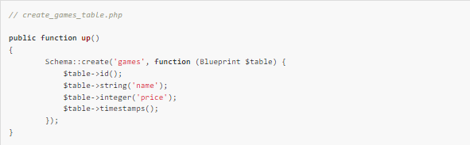
The id and timestamp fields are created by Laravel by default. The name and price are custom fields that the user can add via the webforms. Finally, you can run the migration to create the table in the database.
>>>>>>>>>>>>>>>>>>>>>>>>>>> php artisan migrate
Step 4: Create a Laravel 8 controller.
Laravel resource routing assigns the typical “CRUD” routes to a controller with a single line of code. Since our application is basic crud operations, we will use the Resource Controller for this small project.
>>>>>>>>>>>>>>>> php artisan make:controller GameController --resource
In a fresh install of Laravel 8, no namespace prefix is applied to the route groups that your routes are loaded into.
Here, you can open the App\Providers\RouteServiceProvider.php file and modify the following code inside the boot() method.

That is it. Now it can find the controller. If your controller files are elsewhere, you have to assign the path in the namespace.
Note here that I have added the –resource flag, which will define six methods inside the GameController, namely:
1-Index: (The index() method is used for displaying a list of games).
2-Create: (The create() method will show the Form or view for creating a game).
3-Store: (The store() method is used for creating a game inside the database. Note: create method submits the form data to store() method).
4-Show: (The show() method will display a specified game).
5-Edit: (The edit() method will show the Form for editing a game. Form will be filled with the existing game data).
6-Update: (The update() method is used for updating a game inside the database. Note: edit() method submits the form data to update() method).
7-Destroy: (The destroy() method is used for deleting the specified game).
By default the GameController.php file is created inside the app >> Http >> controllers folder.
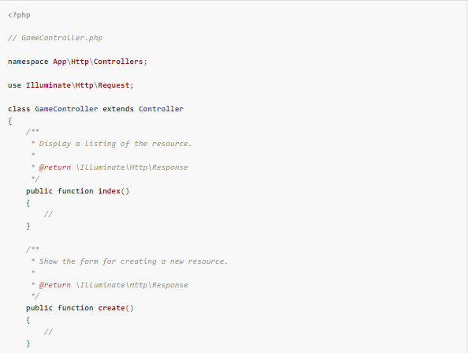
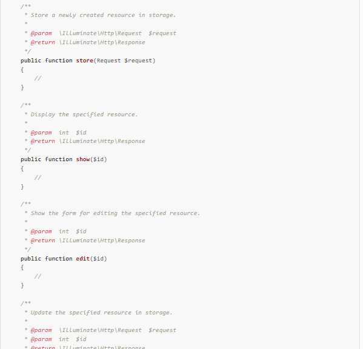
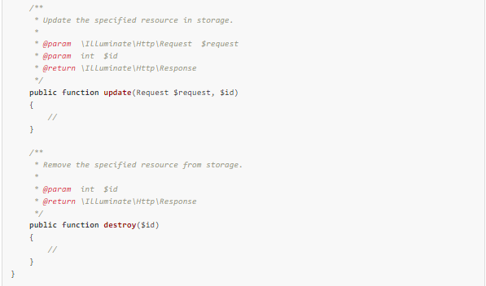
You can see that the file contains CRUD operations in the Form of different functions. We will use these functions, one by one, to create crud operations.
The –resource flag will call the internal resource() method by Laravel to generate the following routes. You can check out the route list using the following command.
>>>>>>>>>>>>>>>>> php artisan route: list
Step 5: Define routes
To define a route in Laravel, you need to add the route code inside the routes
>>>>>>> web.php file.
// web.php
Route::resource('games', 'GameController');
Step 6: Configure Bootstrap in Laravel 8
Laravel provides Bootstrap and Vue scaffolding located in the laravel/ui Composer package, which may be installed using Composer.
>>>>>>>>>>>>>>>>>>>>> composer require laravel/ui
Once the laravel/ui package has been installed, you may install the frontend scaffolding using the ui Artisan command.
>>>>>>>>>>>>>>>> php artisan ui bootstrap
Now, please run “npm install && npm run dev” to compile your fresh scaffolding.
Step 7: Create Views in Laravel 8
Views contain the HTML served by your application and separate your controller/application logic from your presentation logic. Views are stored in the resources/views directory.
Inside the views directory, we also need to create a layout file. So, we will create the file inside the views directory called layout.blade.php. Add the following code in the layout.blade.php file.
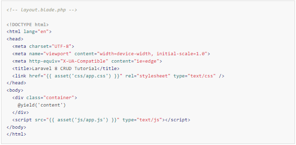
Inside the resources >> views folder, create the following three-blade files.
create.blade.php
edit.blade.php
index.blade.php
Inside the create.blade.php file, write the following code.
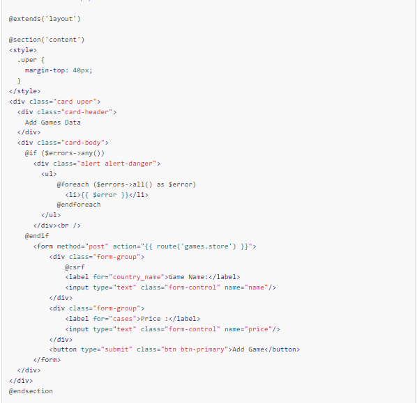
In this code, we have defined the action, which will call the store() method of the GameController’s method. Remember, we have used the resource controller.
Now, we need to return this create view from the create() method of GameController. So write the following code inside the GameController’s create() method.
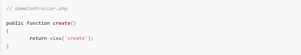
Go to https://laravel8crud.test/games/create or http://localhost:8000, and you will see something like below.
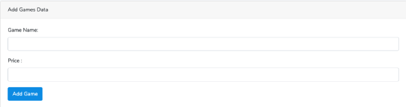
Step 8: Add Validation rules and store the data.
In this step, we will add a Laravel form Validation.
Now, add the GameController.php to import the namespace of the Game model inside the GameController.php file.
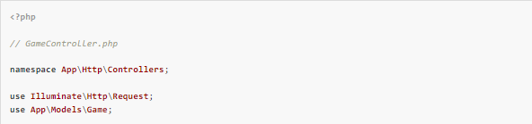
Write the following code inside the GameController.php file’s store() function.

We use the $request->validate() method for validation, which receives an array of validation rules. The
Validation rules[] is the associative array.
The key will be the field_name and value being the validation rules. The second parameter is an optional array for custom validation messages. Rules are separated with a pipe sign “|”. In this example, we are using the most basic validation rules.
If the validation fails, it will redirect back to the form page with error messages. On the other hand, if the validation passes, it will create the new game and save it in the database.
In case of errors, we need to loop through those error messages inside the create.blade.php file, which we have already done it.
If you leave all the form fields empty, you will find an error message like this image.
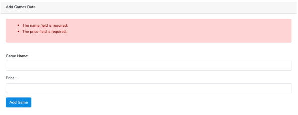
We can see that we got the errors, but if we fill in all the correct data, you will still not save the data into the database because of the Mass Assignment Exception.
To prevent the Mass Assignment Exception, we need to add a $fillable array inside the Game.php model.
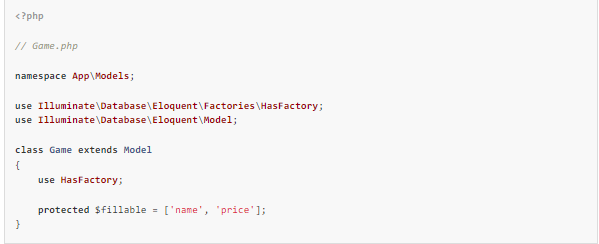
Now, if you fill the correct form fields, it creates a new row in the database.
Step 9: Display the games
To display the list of games, we need to write the HTML code inside the index.blade.php file. But before that, let’s write the index() function of the GameController.php file to get the array of data from the database.
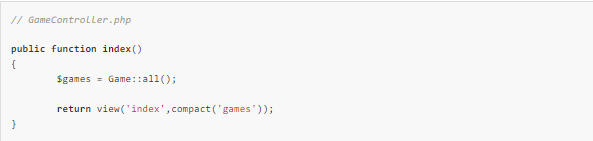
Now, write the following code inside the index.blade.php file.
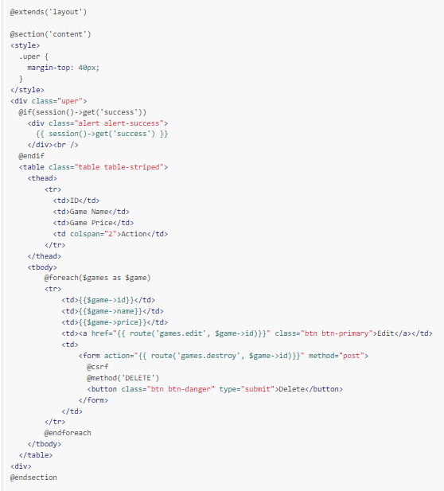
We have added two edit and delete buttons to perform the respective operations.
Step 10: Complete Edit and Update
To edit the data, we need the data from the database.
Add the following code inside the GameController.php file’s edit function.
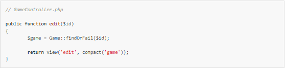
Now, create the new file inside the views folder called edit.blade.php and add the following code.
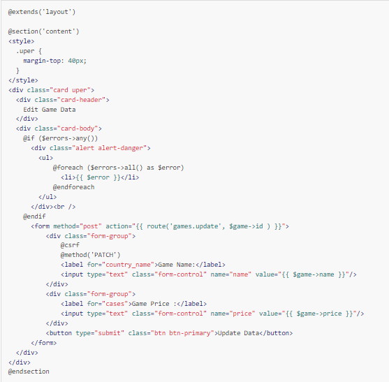
Now go to the index page and then go to the edit page of a specific game, and you will see the Form with filled values. Add the following code inside the GameController’s update() function.
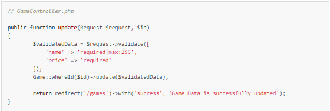
Now you can update all the data into the database.
Step 11: Create Delete Functionality
To remove data from the database, we will use GameController’s destroy() function.
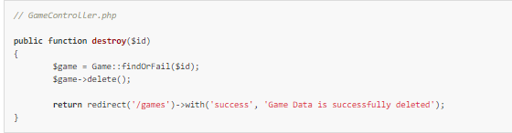
The delete() function is provided by Laravel to remove the data from the Database. The complete controller file is this.
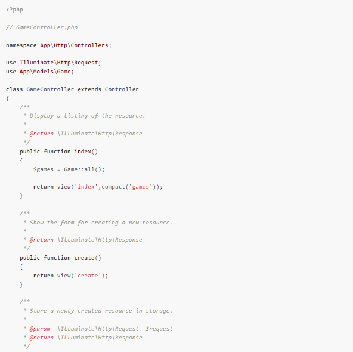
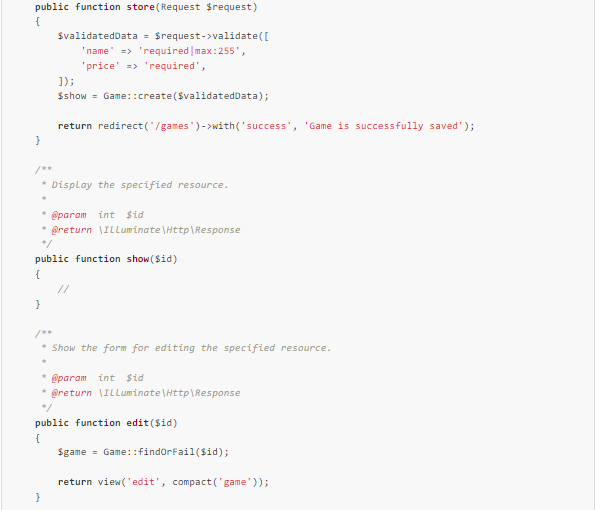
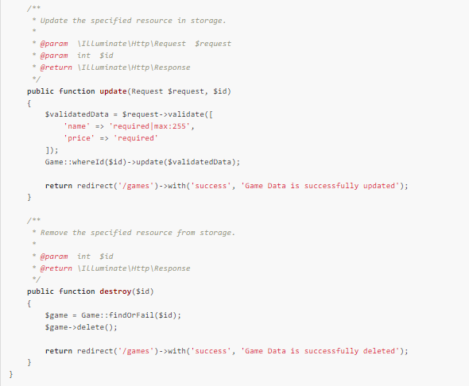
That is it. Now, you can create, read, update, and delete the data in Laravel.
If you are interested in the FrontEnd Javascript framework like Vue with Laravel or Angular with Laravel,
check out the guides like Vue Laravel CRUD and Angular Laravel Tutorial Example.